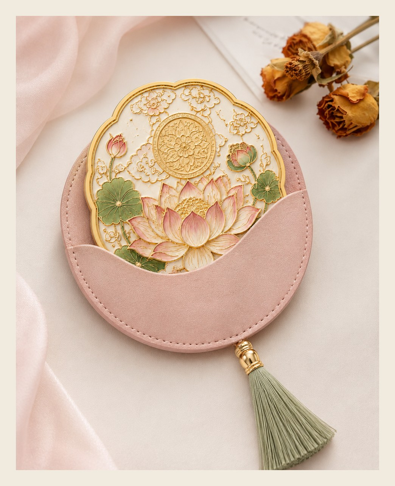

Uy nghi cung đình
Lấy cảm hứng từ mũ Thượng triều thời Nguyễn, bộ sưu tập tái hiện cấu trúc cân xứng, sắc ngọc và những tua ngọc trang nghiêm.
Xem sản phẩm →
TUYỂN CHỌN TỪ DI SẢN
Khám phá cách biểu tượng cung đình, ấn triện và hoa văn cổ được chuyển dịch thành ngôn ngữ thiết kế gần gũi với đời sống.
Lấy cảm hứng từ mũ Thượng triều thời Nguyễn, bộ sưu tập tái hiện cấu trúc cân xứng, sắc ngọc và những tua ngọc trang nghiêm.
Xem sản phẩm →Hình rồng và dấu ấn quyền uy bước vào văn hóa công nghệ và quà tặng ẩm thực bằng một tinh thần mới.
Xem sản phẩm →
Hoa sen trên cổ vật trở thành điểm chạm thanh nhã cho các sản phẩm làm đẹp và phụ kiện cá nhân.
Xem sản phẩm →